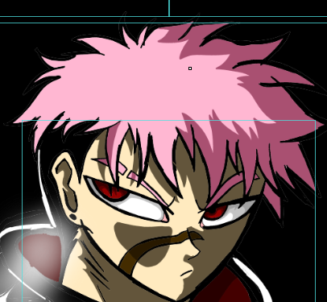

Loyd Martinez é um jovem marcado por duas maldições que transformaram sua vida em uma constante batalha contra si mesmo. Carregando uma grande cicatriz abaixo do olho direito, que se estende até o nariz, ele é facilmente reconhecido por sua aparência intimidadora e pelo olhar cansado de alguém que já enfrentou mais sofrimento do que deveria.
A primeira maldição afeta diretamente sua mente. Em momentos completamente aleatórios, Loyd é forçado a reviver lembranças traumáticas de seu passado com uma intensidade assustadora. Essas memórias surgem sem aviso, fazendo com que ele experimente novamente a dor, o medo e o desespero que sentiu quando os acontecimentos ocorreram. Muitas vezes, ele perde a concentração ou fica emocionalmente abalado por causa dessas recordações involuntárias.
Determinado a recuperar sua liberdade, Loyd embarca em uma jornada para encontrar uma forma de remover ambas as maldições. Em seus primeiros passos, ele conta com a companhia de sua irmã caçula, Liz Martinez, uma garota corajosa que se recusa a abandoná-lo, mesmo diante dos perigos que cercam sua condição.
| Maldição | Efeito | Perigo |
|---|---|---|
| Memórias Traumáticas | Revive traumas aleatórios | Médio |
| Yurei Kurojin | Assume o corpo de Loyd | Extremo |
Durante sua jornada, Loyd também conhece Zak, um jovem que rapidamente se torna seu melhor amigo. Apesar das dificuldades e dos conflitos causados pelas maldições, Zak permanece ao seu lado, oferecendo apoio e ajudando Loyd a seguir em frente quando tudo parece perdido.
Juntos, Loyd, Liz e Zak atravessam cidades, ruínas e territórios perigosos em busca de respostas. A cada nova descoberta, Loyd se aproxima da verdade sobre a origem de suas maldições. No entanto, quanto mais perto chega da cura, mais percebe que os segredos ligados a Yurei Kurojin e ao seu passado podem ser muito mais sombrios do que imaginava.
Sua história é uma jornada sobre trauma, amizade, família e superação, onde a maior batalha de Loyd Martinez não é contra monstros ou inimigos, mas contra os fantasmas que habitam sua própria mente.
Personagem usado como base:
Yuji Itadori (Jujutsu Kaisen)